Model-based learning for high-dimensional wireless systems
Baptiste CHATELIER
Supervisors: Luc LE MAGOAROU, Matthieu CRUSSIERE, Vincent CORLAY
PhD defense - INSA Rennes - January 30, 2026


CONTEXT
- Funded by Mitsubishi Electric R&D Centre Europe (Rennes)
- Hosted at IETR laboratory, INSA Rennes (Rennes)
- Partially hosted at the Institute of Research and Technology b<>com (Rennes)

COLLABORATIONS
- Aalto University, Finland
Chalmers University of Technology, Sweden
- Research stay at Chalmers between September-December 2024


MODEL-BASED MACHINE LEARNING: MOTIVATIONS
Typical data processing setting:
- We observe a large number of correlated variables, explained by a small number of independent factors.


There are two complementary approaches to handle this situation:
- Signal processing
- Model-based
- Large bias
- Low complexity
- AI / ML
- Data-based
- Low bias
- High complexity
Hybrid approach \(\rightarrow\) model-based machine learning
Use models to structure, initialize or optimize learning methods
- Make models more flexible: reduce bias of signal processing methods
- Guide machine learning methods: reduce their complexity
OUR WORK
- Investigate the MB-ML framework for wireless communication problems
Research axes
(A1) Location-to-channel mapping
(A2) Hardware impairments
(A3) Channel compression
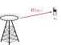


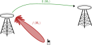

RESEARCH AXIS 1 Location-to-channel mapping
Chapters 4 and 5 of the manuscript

LOCATION-TO-CHANNEL MAPPING
- Propagation channel coefficients are needed in many communication problems
- Radio digital twin \(+\) ray-tracing tools \(\rightarrow\) \(\mcD = \left\{ \bx_i, \bH\left(\bx_i\right) \right\}_{i=1}^N\)

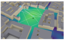
Drawbacks:
- Long generation time (\(\sim\) hours for large scenes)
- Database size proportional to the number of locations (\(\sim\) Gb for large scenes)
ML APPROACH: INR
Use of the Implicit Neural Representation concept:
- Neural networks are universal function approximators
- Using \(\bx\) one can design and train \(\ftheta\) in a supervised manner to learn a representation of \(\bH\left(\bx\right)\)
Benefits:
- Fast inference time
- Storage footprint proportional to the number of learnable parameters
- Classical architecture (MLPs) are biased towards learning low-frequency content
How to train \(\ftheta\) without suffering from the spectral bias?
OVERCOMING THE SPECTRAL BIAS
Main idea: local approximation of the propagation distance using Taylor expansions
- Illustrated for the location component
- Illustrated for the location component
- Illustrated for the location component
- Illustrated for the location component
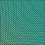
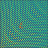


Proposition 4.1: Approximated channel interpretation
\(\forall \left(\bx, \ba_{l,j}\right) \in \mcV_{\bx} \times \mcV_{\ba}\): \[ h_{j,k}\left(\bx\right) \simeq \sum_{l=1}^{L_p} \underbrace{\gamma_l h_{l,r}\left(\bx_r\right)}_{\text{Reference channel}} \underbrace{\vphantom{\gamma_l h_{l,r}\left(\bx_r\right)} \mathrm{e}^{-\mathrm{j}\frac{2\pi}{\lambda_{r}}\bu_{l,r}\left(\bx_r\right)^\transp\left(\bx-\bx_r\right)}}_{\text{Location correction}} \underbrace{\vphantom{\gamma_l h_{l,r}\left(\bx_r\right)}\mathrm{e}^{-\mathrm{j}2\pi \left(f_k-f_r\right)\tau_{l,r}}}_{\text{Frequency correction}} \underbrace{\vphantom{\gamma_l h_{l,r}\left(\bx_r\right)}\mathrm{e}^{\mathrm{j}\frac{2\pi}{\lambda_{r}}\bu_{l,r}\left(\bx_r\right)^\transp\left(\ba_{l,j}-\ba_{l,r}\right)}}_{\text{Antenna correction}} \]- This results in a global sparse approximation:
Theorem 4.2: Global sparse channel approximation (vectorized)
\(\forall \bx \in \mbbR^3\):Theorem 4.2: Global sparse channel approximation (vectorized)
\(\forall \bx \in \mbbR^3\):Theorem 4.2: Global sparse channel approximation (vectorized)
\(\forall \bx \in \mbbR^3\):Theorem 4.2: Global sparse channel approximation (vectorized)
\(\forall \bx \in \mbbR^3\):- with slowly varying \(\tilde{\bPsi}_{\bf}\left(\bx\right), \tilde{\bPsi}_{\ba}\left(\bx\right), \bw\left(\bx\right),\) fastly varying planar wavefronts \(\tilde{\psi}_{\bx}\left(\bx\right)\) \(\rightarrow\) known expression
MODEL-BASED NEURAL ARCHITECTURE

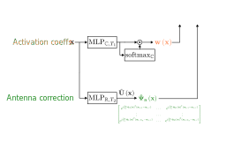
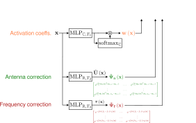
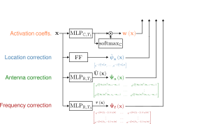
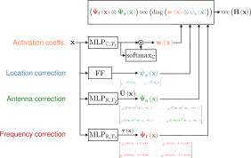
RESULTS

- Reconstruction performance evaluated on 210k independent locations within the red plane


RESULTS: MB-ML TRAINING DYNAMICS

- The MB-ML network quickly learns the correct scene (5 epochs represented here)
APPLICATION TO RADIO-LOCALIZATION
- Given \(\bH\left(\bx\right)\), how to estimate \(\bx\)?
- Fingerprinting-based localization:
\[ \hat{\bx}\left(\bH\left(\bx\right)\right) = \argmax{\tilde{\bx} \in \mathcal{G}} \simil{\bH\left(\bx\right),\bH\left(\tilde{\bx}\right)} \]


Drawback:
- Localization accuracy is limited by the dictionary resolution
Idea:
- Use the trained neural model to generate channel coefficients at wanted locations
\(\rightarrow\) enhancing localization accuracy
- Use a physical channel model to guide an optimization process
\(\rightarrow\) reducing complexity + improving performance
RESULTS
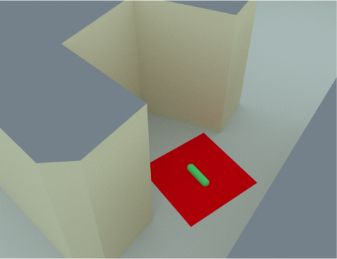
- Localization performance evaluated on 10k independent locations within the red plane
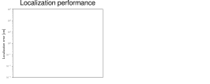
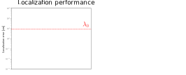
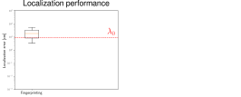
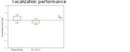
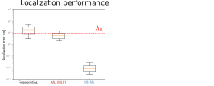
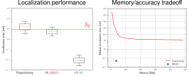
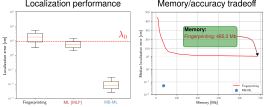

- Sub-wavelength localization accuracy
- \(10^{-1}\) cm \(\simeq 10^{-2} \lambda_0\)
RESEARCH AXIS 2 Hardware impairments learning
Chapters 6 and 7 of the manuscript

MEASUREMENTS STRUCTURE
In many communication problems, the measured signals \(\simeq\) noisy linear measurements of the channel \(\bh\):
- parameterized by channel parameters (DoAs, delays…)
- modeled as a linear combination of atomic channels (steering vectors, frequency response vectors…)
- impacted by system parameters (antenna parameters, clock parameters…)

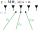
- Recover all the channel parameters (channel estimation/denoising)
\(\rightarrow\) \(\bPsi_{\bzeta}\left(\bphi\right) \bs\)
- Recover part of the channel parameters (DoA/delay/gains estimation)
\(\rightarrow\) \(\bphi\), \(\bs\)
- In actual systems, HWIs impact the system response
\(\bzeta^{\star}\) unknown \(\Rightarrow\bPsi_{\bzeta^{\star}} \left(\bphi\right)\) unknown
\(\bzeta\): system parameters
DOA ESTIMATION
- Received signal: noisy linear combination of steering vectors
- channel parameters: DoAs
\[ \bY = \bA_{\bzeta}\left(\bphi\right) \bS + \bN \]
- System parameters: antenna locations/gains
- MB approach: use of subspace methods \(\rightarrow\) MUltiple SIgnal Classification (MUSIC)


RESEARCH AXIS 3 Efficient channel compression
Chapters 8 and 9 of the manuscript

CSI COMPRESSION IN FDD SYSTEMS
- Classical beamforming methods rely on the full CSI knowledge \(\rightarrow\) challenging in FDD systems
- Idea: encode the CSI at the UE side and decode it at the BS side
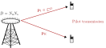
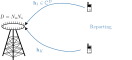


- High \(N_a N_s\) in modern systems \(\rightarrow\) costly reporting procedure
OVERALL STRUCTURE


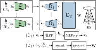
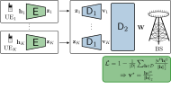
- Initialization: Using the ISOMAP algorithm
- Training: Task-specific loss function (known performance upon convergence)
- Optimization: Similarity-based subsampling [Taner et al.] \(\rightarrow\) reduce the number of learnable parameters
RESULTS


- Improved beam alignment over the scene
- Good performance with high compression ratios, inter-UE interference cancellation
REAL CHANNEL DATASETS
- For channel charting: DICHASUS
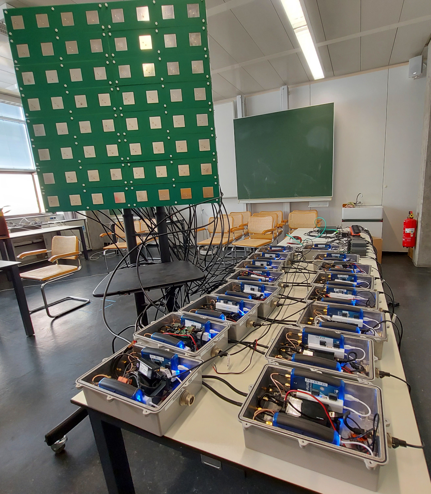
- For the location-to-channel mapping: CAEZ-5G/WiFi

TAYLOR EXPANSIONS
\[ \norm{\mathbf{x}-\mathbf{a}_{l,j}}{2} \simeq \textcolor{black}{\norm{\mathbf{x}_r - \mathbf{a}_{l,r}}{2}} \textcolor{black}{+ \mathbf{u}_{l,j}\left(\mathbf{x}_r\right)^\transp\left(\mathbf{x}-\mathbf{x}_r\right)} \textcolor{black}{- \mathbf{u}_{l,r}\left(\mathbf{x}_r\right)^\transp \left(\mathbf{a}_{l,j}-\mathbf{a}_{l,r}\right)} \]
\[ \textcolor{#FF1B17}{\norm{\mathbf{x}-\mathbf{a}_{l,j}}{2}} \simeq \textcolor{black}{\norm{\mathbf{x}_r - \mathbf{a}_{l,r}}{2}} \textcolor{black}{+ \mathbf{u}_{l,j}\left(\mathbf{x}_r\right)^\transp\left(\mathbf{x}-\mathbf{x}_r\right)} \textcolor{black}{- \mathbf{u}_{l,r}\left(\mathbf{x}_r\right)^\transp \left(\mathbf{a}_{l,j}-\mathbf{a}_{l,r}\right)} \tag{25} \]
\[ \textcolor{#FF1B17}{\norm{\mathbf{x}-\mathbf{a}_{l,j}}{2}} \simeq \textcolor{#0D00BA}{\norm{\mathbf{x}_r - \mathbf{a}_{l,r}}{2}} \textcolor{black}{+ \mathbf{u}_{l,j}\left(\mathbf{x}_r\right)^\transp\left(\mathbf{x}-\mathbf{x}_r\right)} \textcolor{black}{- \mathbf{u}_{l,r}\left(\mathbf{x}_r\right)^\transp \left(\mathbf{a}_{l,j}-\mathbf{a}_{l,r}\right)} \tag{25} \]
\[ \textcolor{#FF1B17}{\norm{\mathbf{x}-\mathbf{a}_{l,j}}{2}} \simeq \textcolor{#0D00BA}{\norm{\mathbf{x}_r - \mathbf{a}_{l,r}}{2}} \textcolor{#62BE00}{+ \mathbf{u}_{l,j}\left(\mathbf{x}_r\right)^\transp\left(\mathbf{x}-\mathbf{x}_r\right)} \textcolor{black}{- \mathbf{u}_{l,r}\left(\mathbf{x}_r\right)^\transp \left(\mathbf{a}_{l,j}-\mathbf{a}_{l,r}\right)} \tag{25} \]
\[ \textcolor{#FF1B17}{\norm{\mathbf{x}-\mathbf{a}_{l,j}}{2}} \simeq \textcolor{#0D00BA}{\norm{\mathbf{x}_r - \mathbf{a}_{l,r}}{2}} \textcolor{#62BE00}{+ \mathbf{u}_{l,j}\left(\mathbf{x}_r\right)^\transp\left(\mathbf{x}-\mathbf{x}_r\right)} \textcolor{#FF8A00}{-\mathbf{u}_{l,r}\left(\mathbf{x}_r\right)^\transp \left(\mathbf{a}_{l,j}-\mathbf{a}_{l,r}\right)} \tag{25} \]
\[ \textcolor{#FF1B17}{\norm{\mathbf{x}-\mathbf{a}_{l,j}}{2}} \simeq \textcolor{#0D00BA}{\norm{\mathbf{x}_r - \mathbf{a}_{l,r}}{2}} \textcolor{#62BE00}{+ \mathbf{u}_{l,j}\left(\mathbf{x}_r\right)^\transp\left(\mathbf{x}-\mathbf{x}_r\right)} \textcolor{#FF8A00}{-\mathbf{u}_{l,r}\left(\mathbf{x}_r\right)^\transp \left(\mathbf{a}_{l,j}-\mathbf{a}_{l,r}\right)} \tag{25} \]
\[ \textcolor{#FF1B17}{\norm{\mathbf{x}-\mathbf{a}_{l,j}}{2}} \simeq \textcolor{#0D00BA}{\norm{\mathbf{x}_r - \mathbf{a}_{l,r}}{2}} \textcolor{#62BE00}{+ \mathbf{u}_{l,j}\left(\mathbf{x}_r\right)^\transp\left(\mathbf{x}-\mathbf{x}_r\right)} \textcolor{#FF8A00}{-\mathbf{u}_{l,r}\left(\mathbf{x}_r\right)^\transp \left(\mathbf{a}_{l,j}-\mathbf{a}_{l,r}\right)} \tag{25} \]
\[ \textcolor{#FF1B17}{\norm{\mathbf{x}-\mathbf{a}_{l,j}}{2}} \simeq \textcolor{#0D00BA}{\norm{\mathbf{x}_r - \mathbf{a}_{l,r}}{2}} \textcolor{#62BE00}{+ \mathbf{u}_{l,j}\left(\mathbf{x}_r\right)^\transp\left(\mathbf{x}-\mathbf{x}_r\right)} \textcolor{#FF8A00}{-\mathbf{u}_{l,r}\left(\mathbf{x}_r\right)^\transp \left(\mathbf{a}_{l,j}-\mathbf{a}_{l,r}\right)} \tag{25} \]
\[ \textcolor{#FF1B17}{\norm{\mathbf{x}-\mathbf{a}_{l,j}}{2}} \simeq \textcolor{#0D00BA}{\norm{\mathbf{x}_r - \mathbf{a}_{l,r}}{2}} \textcolor{#62BE00}{+ \mathbf{u}_{l,j}\left(\mathbf{x}_r\right)^\transp\left(\mathbf{x}-\mathbf{x}_r\right)} \textcolor{#FF8A00}{-\mathbf{u}_{l,r}\left(\mathbf{x}_r\right)^\transp \left(\mathbf{a}_{l,j}-\mathbf{a}_{l,r}\right)} \tag{25} \]

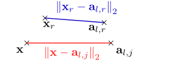

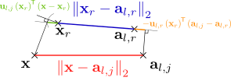


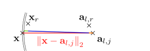
RECONSTRUCTION RESULTS

PROPOSED LOCALIZATION METHOD
- Based on grid-search and gradient descent, using a Frobenius norm similarity measure:
\[ \mu_{\textsf{PS}}\left(\bH\left(\bx\right), \tilde{\bx} \vert \btheta \right) = \norm{\bH\left(\bx\right) - \ftheta\left(\tilde{\bx}\right)}{\mathsf{F}} \]
- How to estimate \(\bx\)?
- Background: \(\norm{\bH\left(\bx\right) - \ftheta\left(\tilde{\bx}\right)}{\mathsf{F}}\)
- Generate the global grid \(\mathcal{G}_{\textsf{G}}\) based on topological knowledge of the scene
- Generate the global grid \(\mathcal{G}_{\textsf{G}}\) based on topological knowledge of the scene
- Using \(\ftheta\), solve:
\[ \tilde{\bx}_{\textrm{i}} = \argmin{\tilde{\bx} \in \mathcal{G}_{\textsf{G}}} \norm{\bH\left(\bx\right) - \ftheta\left(\tilde{\bx}\right)}{\mathsf{F}} \]
- Generate the local grid \(\mathcal{G}_{\textsf{L}}\) around the obtained location
- Generate the local grid \(\mathcal{G}_{\textsf{L}}\) around the obtained location
- Using \(\ftheta\), solve:
\[ \tilde{\bx}_{\textrm{g}} = \argmin{\tilde{\bx} \in \mathcal{G}_{\textsf{L}}} \norm{\bH\left(\bx\right) - \ftheta\left(\tilde{\bx}\right)}{\mathsf{F}} \]
- Perform \(N_{\nabla}\) gradient descent steps
- Perform \(N_{\nabla}\) gradient descent steps
- Perform \(N_{\nabla}\) gradient descent steps
- Perform \(N_{\nabla}\) gradient descent steps
- Perform \(N_{\nabla}\) gradient descent steps
- Local minima issue
- Perform \(N_{\nabla}\) gradient descent steps
- Local minima issue
- Spacing between minima derived from \(\mu_{\textsf{PS}}\)
- Perform \(N_{\nabla}\) gradient descent steps
- Local minima issue
- Spacing between minima derived from \(\mu_{\textsf{PS}}\)
- Generate circles of radius \(k\lambda_0, k \in \mbbN^*\)
- Perform \(N_{\nabla}\) gradient descent steps
- Local minima issue
- Spacing between minima derived from \(\mu_{\textsf{PS}}\)
- Generate circles of radius \(k\lambda_0, k \in \mbbN^*\)
- Generate \(\mathcal{G}_{\textsf{C}}\) by sampling for the circles
- Perform \(N_{\nabla}\) gradient descent steps
- Local minima issue
- Spacing between minima derived from \(\mu_{\textsf{PS}}\)
- Generate circles of radius \(k\lambda_0, k \in \mbbN^*\)
- Using \(\ftheta\), solve:
\[ \tilde{\bx}_{\textrm{c}^{\star}} = \argmin{\tilde{\bx} \in \mathcal{G}_{\textsf{C}}} \norm{\bH\left(\bx\right) - \ftheta\left(\tilde{\bx}\right)}{\mathsf{F}} \]
- Perform \(N_{\nabla}\) gradient descent steps
- Perform \(N_{\nabla}\) gradient descent steps
- Perform \(N_{\nabla}\) gradient descent steps
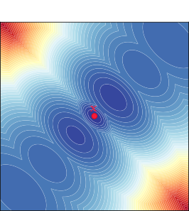

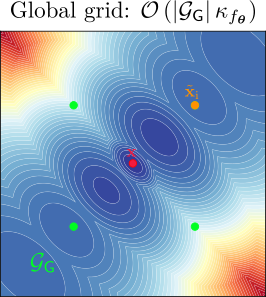


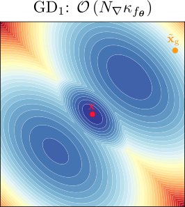


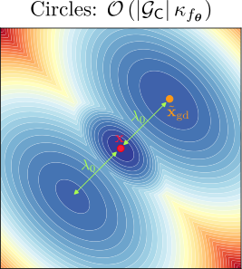

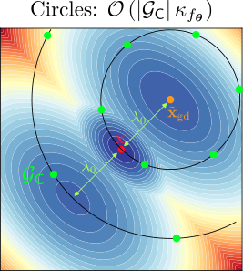

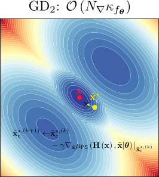

CELL-FREE SYSTEM


MONO-UE PERFORMANCE (SUBSAMPLING)


- Subsampling does not impact mono-UE beamforming performance